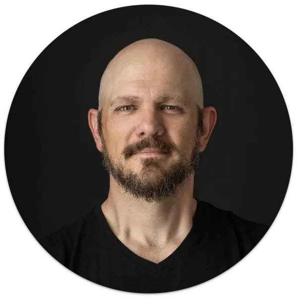

I lead Delivery Operations — Ways of Working, DevOps & Environments, and Release Management — for Cigna Healthcare's Individual & Family Plans business, a Fortune 15, SOX-governed technology organization. It's where two threads of my career meet: organizational leadership, going back to standing up GuideStar's first Agile and Scrum practices as their Software Engineering Director, and product, from my later roles there as Product Owner for Charity Check™ and Product Manager for our public search engine and API products. Today those threads run together: I'm co-leading IFP's shift from a project-funded delivery model into an SVPG-inspired product operating model, and I teach a Strategyzer-influenced curriculum that trains Product Managers to run hypothesis-driven experiments. I still lead the organizational side, too, as President of Agile Richmond's board.
The roadmap so far
Technology Director, Delivery Operations
Individual & Family Plans at Cigna Healthcare
Direct Delivery Operations across three integrated functions — Ways of Working, DevOps & Environments, and Release Management — building the governance and portfolio practices that turn underbuilt delivery areas into predictable, auditable operations under SOX. Use DORA metrics to drive down lead time and feature cycle time, and co-leading IFP's shift from a project-funded delivery model into an SVPG-inspired product organization with distinct external-customer and internal-platform product lines. Co-developed and teach a Strategyzer-influenced curriculum that trains Product Managers company-wide to run hypothesis-driven experiments.
Vice President, Enterprise Agile Coach
Truist
Designed and aligned the enterprise technology operating model for a top-10 U.S. financial institution during a high-stakes post-merger integration. Used Intent-Based Leadership to build team autonomy ahead of a long-term handoff to internal owners.
Enterprise Product and Agile Coach
Eliassen Group
Brought agility to a Fortune 100 mortgage company's mission-critical business rules program, and partnered with a Fortune 150 financial services client's second-line risk organization to build “Empowered Teams Aligned to Deliver Value.”
Enterprise Agile & Product Coach
CirrusLabs
Helped a Big Four firm and a Fortune 50 company scale Agile with SAFe; aligned teams around value and shortened delivery cycle times for a Fortune 100 credit card operations division migrating to the cloud.
Enterprise Agile Coach
Agile Velocity
Co-developed the Path to Agility™ transformation framework. Led Southwest Airlines Marketing's business agility pilot (millions in incremental revenue) and a 250-person Southwest IT team's 3-week scheduling-app launch that saved $5M in two months. Coached Texas Mutual Insurance from a 9-month to a 2-week release cadence.
Sr. Agile Coach & Engagement Lead
SolutionsIQ
Led a 20+ person consulting team scaling product delivery structures across a Fortune 100 retail banking division, building the capability frameworks for internal handoff.
IT Director → Software Engineering Director → Sr. Director of Technology Strategy
GuideStar USA (now Candid)
Architected a private VMware cloud (99.99% uptime) as IT Director; stood up the org's first Agile and Scrum practices as Software Engineering Director; then as Sr. Director of Technology Strategy, served as Product Owner for Charity Check™ and Product Manager for the public search engine and API family, and co-founded the international BRIDGE partnership with Google.org, the Gates Foundation, and the Hewlett Foundation.
President, Board of Directors
Agile Richmond
Direct board governance, financial strategy, and community growth for the nonprofit supporting Agile practitioners across Central Virginia, including the annual InnoVAte Virginia conference for 1,500+ attendees — organizational leadership applied outside the day job.